The flights()dataset contains daily total delays (Jan 1, 2015 – Dec 31, 2015) of Southwest Airlines at different airports in California, Nevada, Arizona, Utah, and Texas.
The object flights() is a list made of:
-
data: adplyr::tibble()containing the delay data. Each row corresponds to a day and each column to an airport. -
airports: adplyr::tibble()containing the details for each airport. -
connections: adplyr::tibble()containing the details of the undirected flights.
In the code below, we show how to load the dataset and plot the flight connections.
# Load the dataset
data <- flights$data
airports <- flights$airports
connections <- flights$connections
mat <- data %>%
select(-DATE) %>%
as.matrix()
# Plot flight connection
ggplot() +
geom_polygon(data = map_data("usa"),
aes(x = long, y = lat, group = group), color = "grey65",
fill = "#f9f9f9", size = 0.2) +
geom_point(data = airports,
aes(x = LONGITUDE, y = LATITUDE, size = N_FLIGHTS),
alpha = 1) +
geom_curve(data = connections,
aes(x = LONGITUDE.origin, xend = LONGITUDE.dest,
y = LATITUDE.origin, yend = LATITUDE.dest,
size = N_FLIGHTS),
alpha = .2, curvature = 0)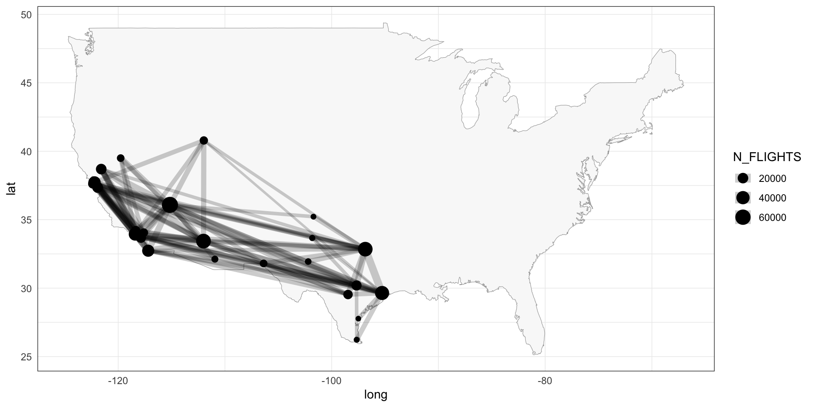
Also, it is useful to create an igraph::graph() object for the flights connections.
flight_graph <- connections %>%
select(ID.origin, ID.dest) %>%
as.matrix() %>%
igraph::graph_from_edgelist(directed = FALSE)In the exercises below we are modeling the extremal dependence of the flight delays at the 24 airports. Note that the flight_graph does not necessarily represent the extremal graphical structure, but it can be used as a comparison to the estimated graphs.
Below, we provide a helper functions that you might use to plot an igraph::graph() object on the US map.
# Function definition
plot_connections <- function(graph, airports) {
## igraph tibble -> ggplot
## plots the given `graph` on the US map
# name the graph nodes
igraph::V(graph)$name <- airports$IATA_CODE[airports$ID == igraph::V(graph)]
# write flight connections
flights_connections_est <- igraph::get.edgelist(graph) %>%
as_tibble(.name_repair = ~ c("ORIGIN_AIRPORT", "DESTINATION_AIRPORT")) %>%
left_join(airports, by = c("ORIGIN_AIRPORT" = "IATA_CODE")) %>%
left_join(airports, by = c("DESTINATION_AIRPORT" = "IATA_CODE"),
suffix = c(".origin", ".dest")) %>%
select(ORIGIN_AIRPORT, DESTINATION_AIRPORT,
LATITUDE.origin, LONGITUDE.origin,
LATITUDE.dest, LONGITUDE.dest)
# plot connections
ggplot() +
geom_polygon(data = map_data("usa"),
aes(x = long, y = lat, group = group), color = "grey65",
fill = "#f9f9f9", size = 0.2) +
geom_point(data = airports,
aes(x = LONGITUDE, y = LATITUDE, size = N_FLIGHTS),
alpha = 1) +
geom_curve(data = flights_connections_est,
aes(x = LONGITUDE.origin, xend = LONGITUDE.dest,
y = LATITUDE.origin, yend = LATITUDE.dest),
alpha = .4, curvature = 0)
}
# Plot an igraph object
plot_connections(flight_graph, airports)
Part A
- Fit an extremal tree model to the flight delays using
emst(), choosing the thresholdp = 0.7.
p <- .7
flights_emst_fit <- emst(data = mat, p = p, method = "vario")- Plot the estimated tree on the US map and interpret the results.
plot_connections(flights_emst_fit$graph, airports)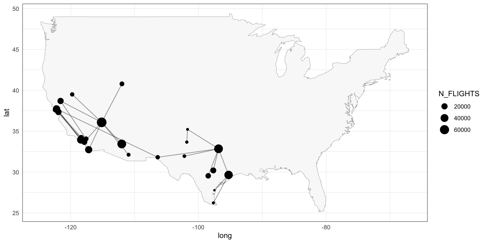
- Compute the BIC value of the fitted tree model.
flights_loglik_tree <- loglik_HR(data=mat, p=p,
Gamma = flights_emst_fit$Gamma,
graph = flights_emst_fit$graph)
paste0("Tree BIC = ", flights_loglik_tree[3] %>% round(2))
> [1] "Tree BIC = 17057.86"- Plot the empirical \(\chi\) coefficient against the \(\chi\) coefficient implied by the fitted model.
emp_chi_mat <- emp_chi(mat, p = p)
ggplot() +
geom_point(aes(x = c(Gamma2chi(flights_emst_fit$Gamma)),
y = c(emp_chi_mat))) +
geom_abline(slope = 1, intercept = 0) +
xlab("Fitted") +
ylab("Empirical")
- Given the
flight_graphobject, fit a HR graphical model usingfmpareto_graph_HR().
model_fit <- fmpareto_graph_HR(data = mat,
graph = flight_graph, p = p, method = "vario")- Compute the BIC value for the
flight_graphobject and the correspondingGammamatrix obtained at Step 5.
flights_loglik_graph <- loglik_HR(data = mat,
p = p, graph = flight_graph,
Gamma = model_fit$Gamma)
paste0("BIC = ", flights_loglik_graph[3] %>% round(2))
> [1] "BIC = 15087.81"- Plot the empirical \(\chi\) coefficient against the \(\chi\) coefficient implied by the fitted model of Step 5.
ggplot() +
geom_point(aes(x = c(Gamma2chi(model_fit$Gamma)),
y = c(emp_chi_mat))) +
geom_abline(slope = 1, intercept = 0) +
xlab("Fitted") +
ylab("Empirical")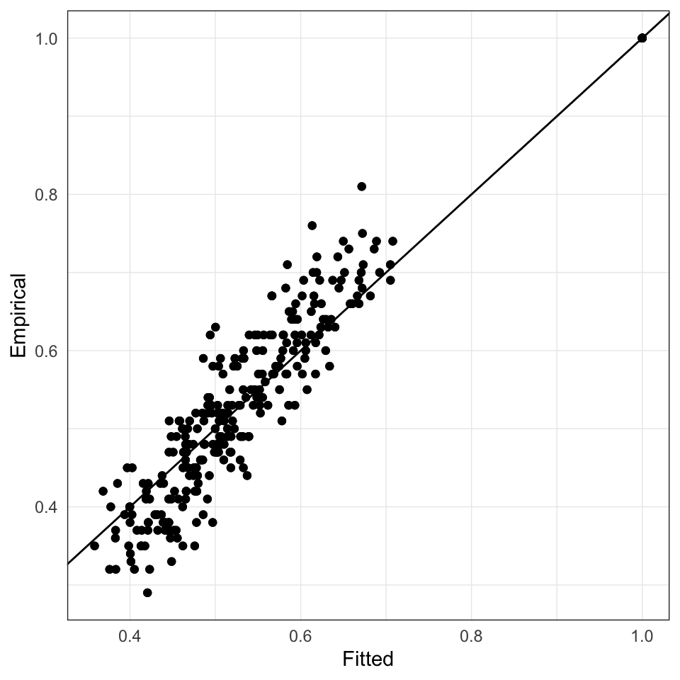
Part B
- Fit an extremal graphical lasso model with
eglasso(), choosing thresholdp = 0.7, andrholist = seq(1e-4, 0.10, length.out = 10).
Gamma <- emp_vario(mat, p = p)
rholist = seq(1e-4, 0.10, length.out = 10)
flights_eglasso_fit <- eglasso(Gamma, rholist = rholist, complete_Gamma = TRUE)- Plot the estimated graph on the US map for different values of
rhoand interpret the results.
plot_connections(flights_eglasso_fit$graph[[10]], airports)
- Compute and plot the BIC values of the estimated models for different values of
rho.
flights_loglik <- sapply(seq_along(rholist), FUN = function(j) {
loglik_HR(data=mat, p=p,
Gamma = flights_eglasso_fit$Gamma[[j]],
graph = flights_eglasso_fit$graph[[j]] )
})
ggplot(mapping = aes(x = rholist, y = flights_loglik[3, ])) +
geom_line() +
geom_point(shape = 21, size = 3, stroke = 1, fill = "white") +
geom_hline(aes(yintercept = flights_loglik_tree[3]), lty = "dashed") +
xlab("rho") +
ylab("BIC") +
scale_x_continuous(
breaks = rholist,
labels = round(rholist, 3),
sec.axis = sec_axis(trans=~., breaks = rholist,
labels = sapply(flights_eglasso_fit$graph,
igraph::gsize),
name="Number of edges")
)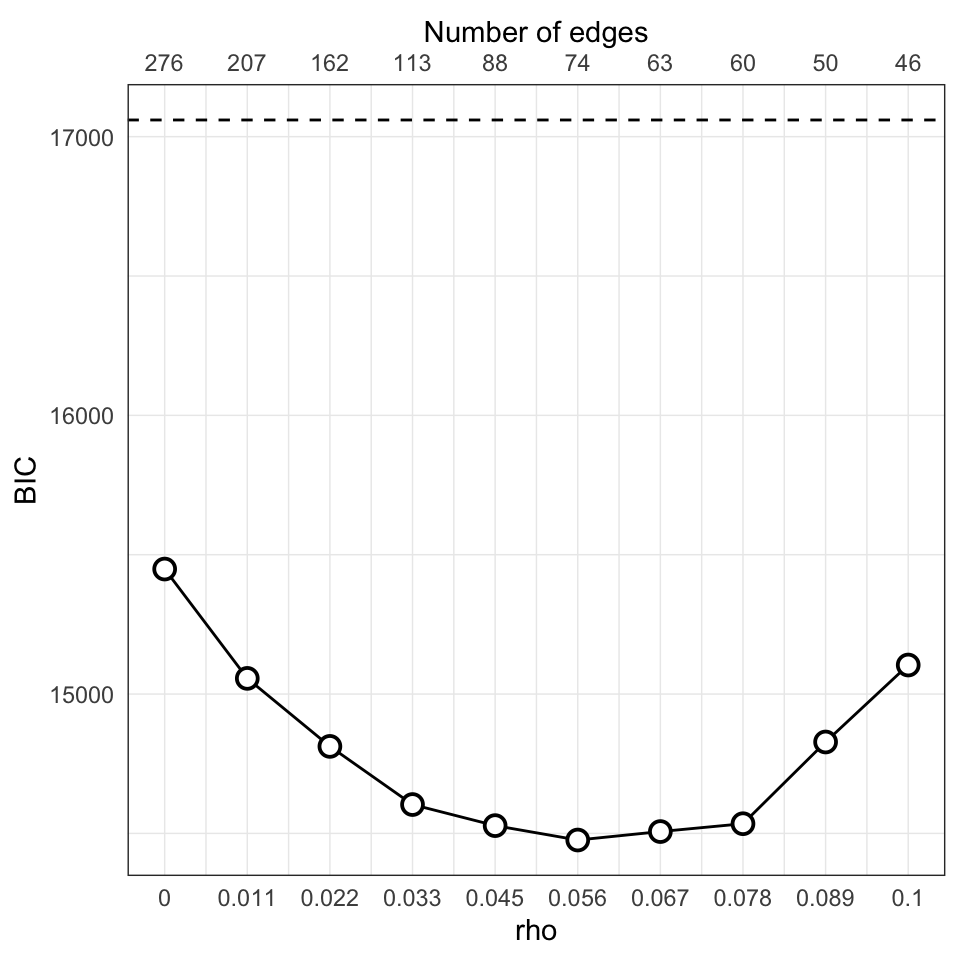
- Plot the empirical \(\chi\) coefficient against the \(\chi\) coefficient implied by the best fitted model.
best_Gamma <- flights_eglasso_fit$Gamma[[which.min(flights_loglik[3,])]]
ggplot() +
geom_point(aes(x = c(Gamma2chi(best_Gamma)),
y = c(emp_chi_mat))) +
geom_abline(slope = 1, intercept = 0) +
xlab("Fitted") +
ylab("Empirical")
- The function
eglasso()accepts as input the variogram matrixGamma. Try to estimate the variogram matrix using different methods, such as:
-
emp_vario(), fixing somek, e.g.,k = 1. -
graphicalExtremes:::ml_weight_matrix(), which is an internal function.
With these different estimates for the variogram:
- fit an
eglasso()model, - plot the corresponding BIC curves,
- plot the empirical \(\chi\) coefficient against the \(\chi\) coefficient implied by the best
eglasso()fit.
Hint: For some of the methods, you might need to adjust the rholist provided to eglasso().
Gamma_vario_k_1 <- emp_vario(data = mat, k = 1, p = p)
flights_eglasso_k_1 <- eglasso(Gamma_vario_k_1, rholist,
complete_Gamma = TRUE)
Gamma_ml <- graphicalExtremes:::ml_weight_matrix(data = mat, p = p)
flights_eglasso_ml <- eglasso(Gamma_ml$est_gamma, rholist,
complete_Gamma = TRUE) 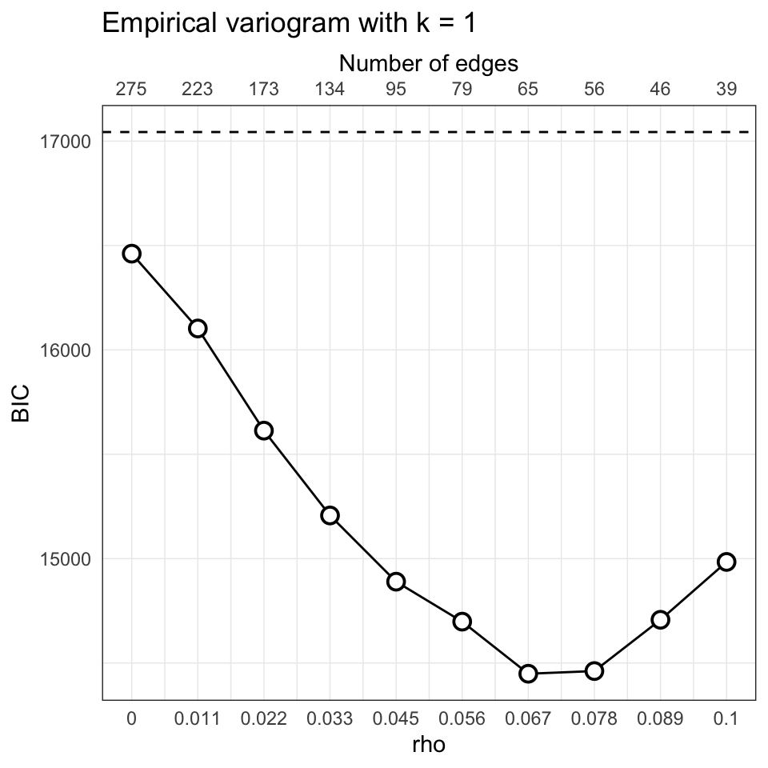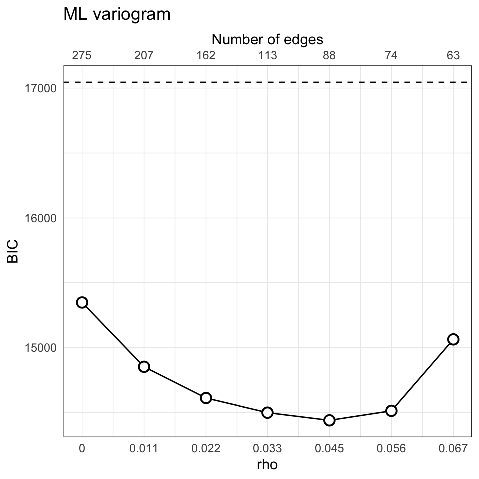
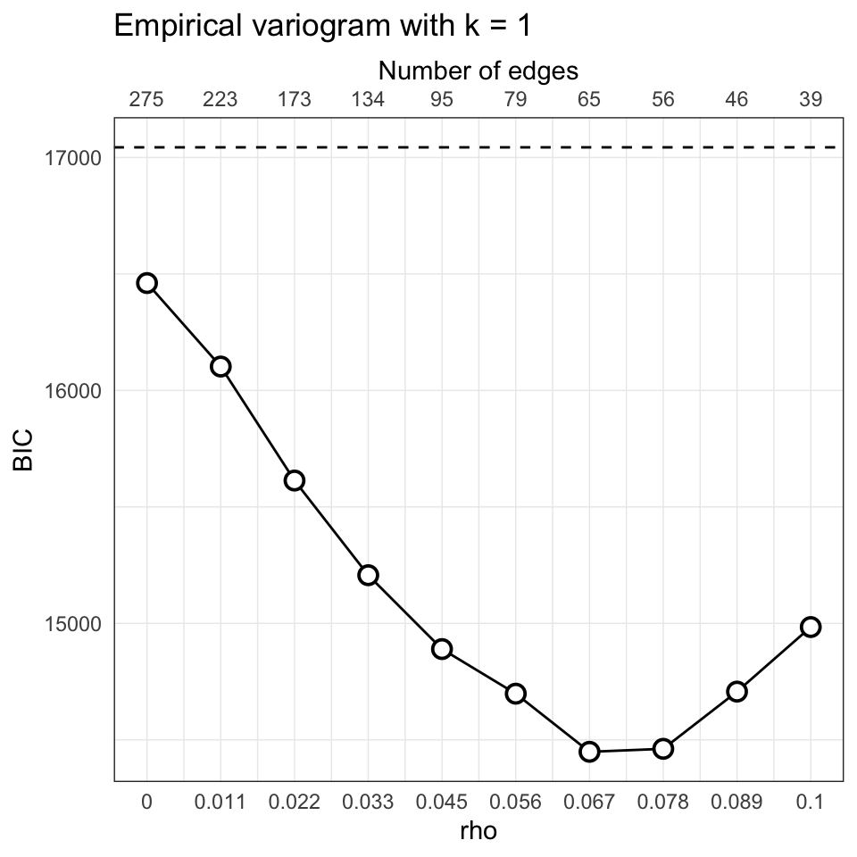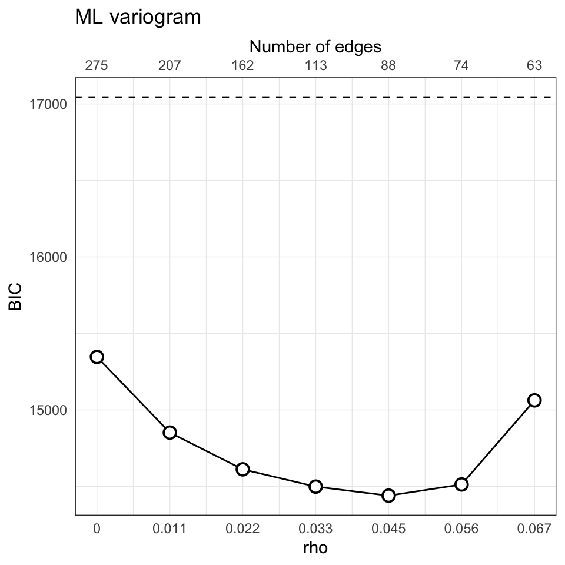
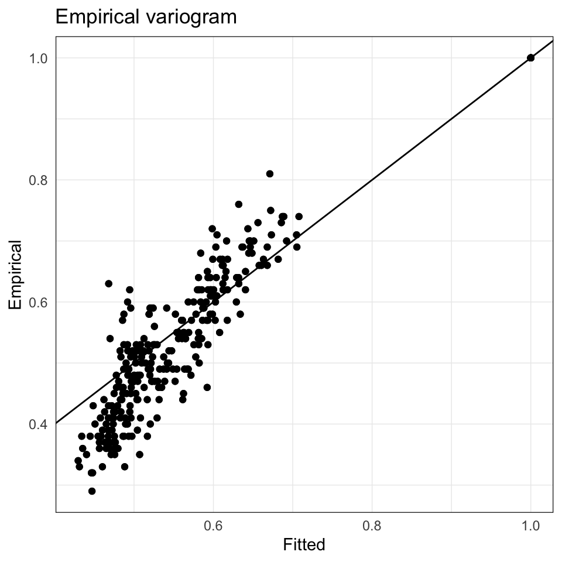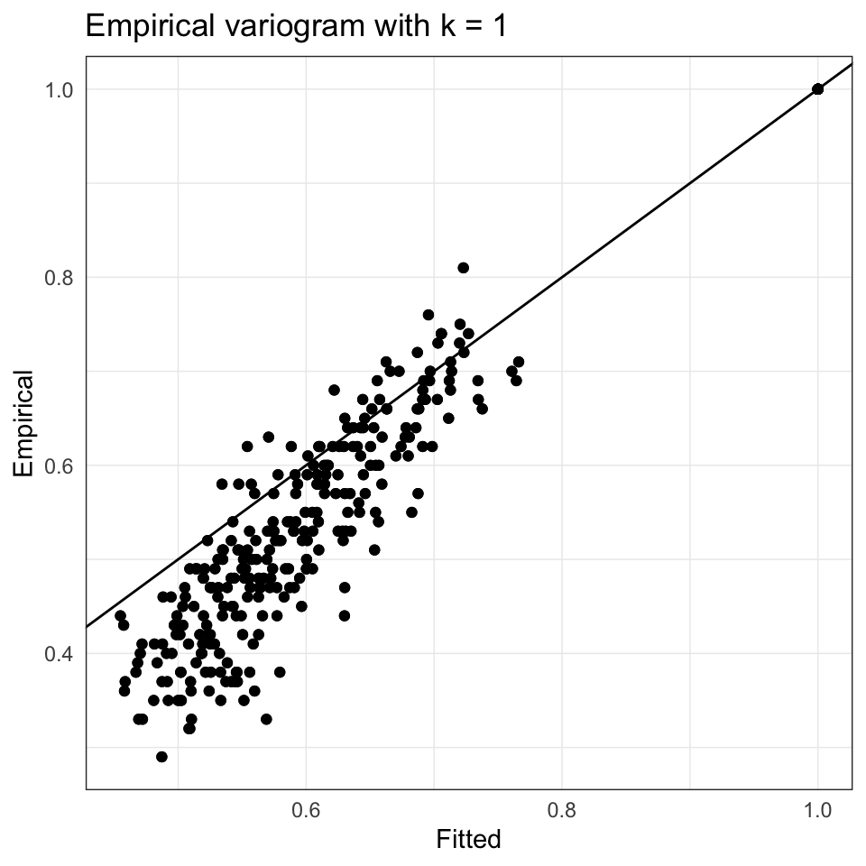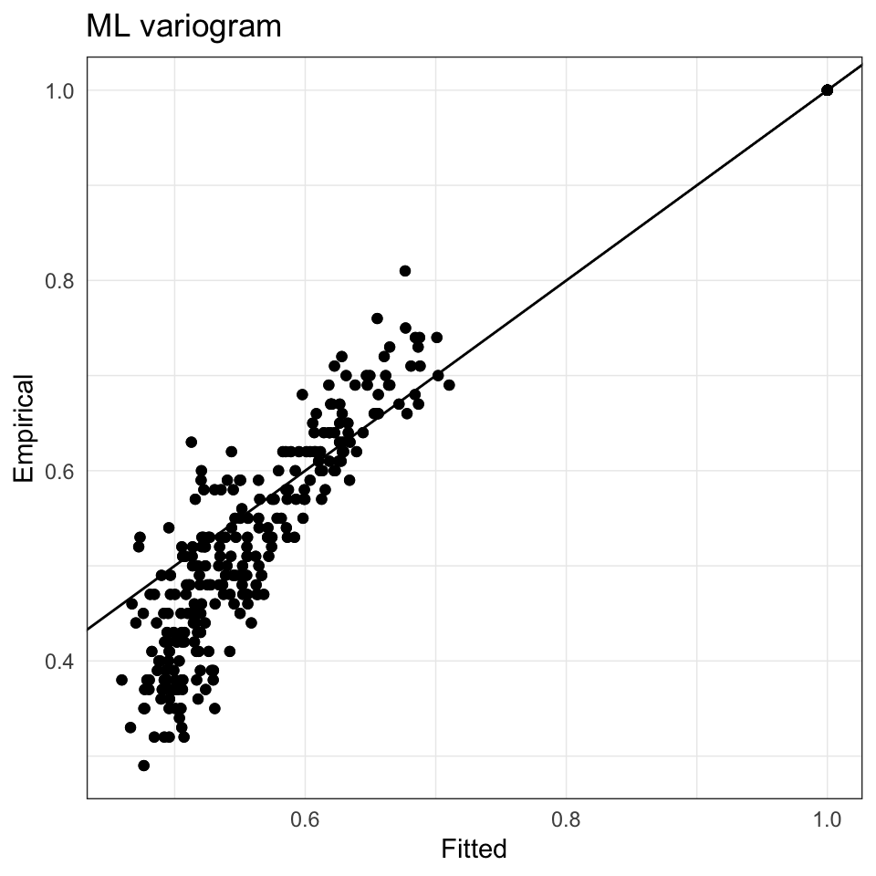